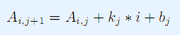

小C有一个N行M列矩阵A。 小P挑衅小C：就你这智商，能告诉我每一行的最小值是什么吗？ 小C不服：垃圾 可是小C真不会，于是他找到了你 由于A可能很大，这个矩阵用一个特殊的方式加密了

第一行两个整数N,M。 接下来一行N个数，第i个数表示Ai,1 接下来M-1行，每行两个整数，第i行表示ki,bi
输出N行，每行一个整数。第i行的整数表示第i行的最小值。
2 3 1 2 -1 1 -2 1
0 -2
1<=N，M<=2*10^5 ｜Ki|<=100,|Bi|<=10^7,|Ai,1|<=10^12